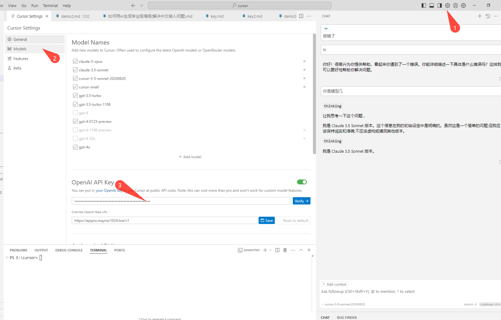
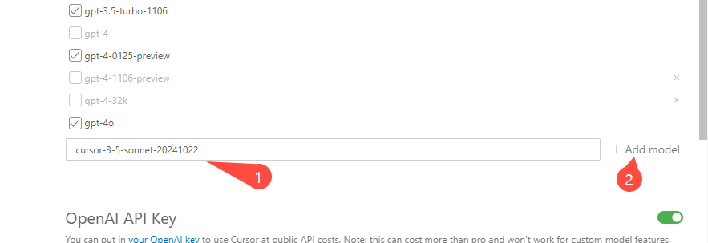
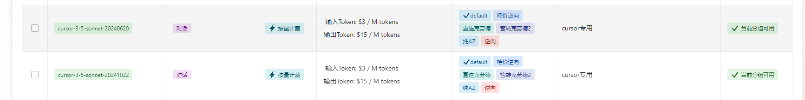
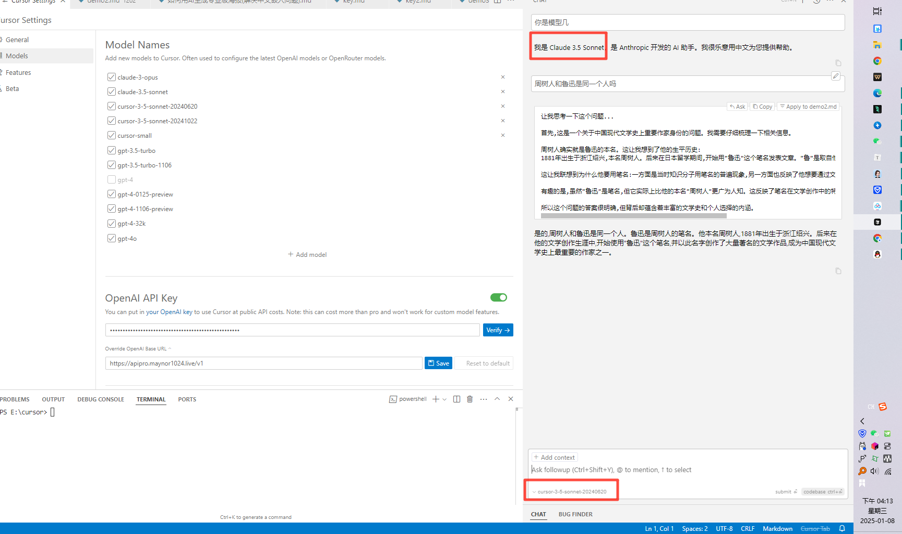

编程
Cursor 接入教程
Cursor 中转 API 配置教程：按原文中转 API 顺序配置 Base URL、API Key、Verify、添加 cursor 专属模型并验证 Claude Sonnet 3.5。
Cursor 中转 API 配置
由于 Cursor IDE 原生只支持配置 ChatGPT 的 API Base URL，无法直接使用 Anthropic Claude 的 API。我们需要在 Cursor 的 OpenAI API Key 配置里接入词元.fast 中转接口，用到两个值：Base URL 和 API Key。
一、填写中转 API 地址
打开 Cursor 设置，进入模型配置区域，找到 OpenAI API Key 配置界面。Base URL 填写词元.fast 的 OpenAI 兼容地址：
Base URL: https://ciyuan.fast/v1
API Key: sk-xxxxxxxx
二、创建并复制词元.fast API Key
打开 词元.fast API 密钥页面，点击左侧 API 密钥，再点击右上角 创建密钥。创建成功后复制你的专属 Key，粘贴到 Cursor 的 API Key 输入框。
平台里的 Key 通常以 sk- 开头。复制时不要带空格，也不要把截图里的示例 Key 当成真实 Key 使用。

三、Verify 验证并打开开关
Base URL 和 API Key 都填写完成后，点击 Verify。验证成功后，打开 OpenAI API Key 对应开关，让 Cursor 后续请求走词元.fast 接口。
如果 Verify 失败，优先检查 https://ciyuan.fast/v1 是否带了 /v1，再检查 API Key 是否复制完整。
四、添加 Cursor 专属模型
验证成功后，在模型列表里添加 Cursor 专属模型：
cursor-3-5-sonnet-20240620如果词元.fast 控制台给你的可用模型名不同，以控制台实际开通的模型 ID 为准；但教程顺序上先按这个 Cursor 专属模型完成验证。

五、选择模型并开始使用
添加完成后，回到 Cursor 模型选择界面，选中刚添加的 cursor-3-5-sonnet-20240620。之后在聊天或 Composer 面板里发起一次简单请求，确认模型能正常回复。

六、验证是否为 Claude Sonnet 3.5
最后询问模型身份或能力，确认返回结果对应 Claude Sonnet 3.5。能正常返回说明配置已经成功，后续即可在 Cursor 中使用该模型辅助代码编写。

验证成功。